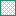

<!doctype html>
<html lang="en">
    <head>
        <meta charset="utf-8">
        <meta http-equiv="X-UA-Compatible" content="IE=edge">
        <meta name="viewport" content="initial-scale=1,user-scalable=no,maximum-scale=1,width=device-width">
        <meta name="mobile-web-app-capable" content="yes">
        <meta name="apple-mobile-web-app-capable" content="yes">
        <link rel="stylesheet" href="css/leaflet.css">
        <link rel="stylesheet" href="css/qgis2web.css"><link rel="stylesheet" href="css/fontawesome-all.min.css">
        <style>
        #map {
            width: 457px;
            height: 634px;
        }
        </style>
        <title></title>
    </head>
    <body>
        <div id="map">
        </div>
        <script src="js/qgis2web_expressions.js"></script>
        <script src="js/leaflet.js"></script>
        <script src="js/leaflet.rotatedMarker.js"></script>
        <script src="js/leaflet.pattern.js"></script>
        <script src="js/leaflet-hash.js"></script>
        <script src="js/Autolinker.min.js"></script>
        <script src="js/rbush.min.js"></script>
        <script src="js/labelgun.min.js"></script>
        <script src="js/labels.js"></script>
        <script src="data/UsodeTierras_1.js"></script>
        <script>
        var map = L.map('map', {
            zoomControl:true, maxZoom:28, minZoom:1
        }).fitBounds([[-18.775483409771965,-81.94741571143595],[0.45245444872804796,-68.10451741140824]]);
        var hash = new L.Hash(map);
        map.attributionControl.setPrefix('<a href="https://github.com/tomchadwin/qgis2web" target="_blank">qgis2web</a> &middot; <a href="https://leafletjs.com" title="A JS library for interactive maps">Leaflet</a> &middot; <a href="https://qgis.org">QGIS</a>');
        var autolinker = new Autolinker({truncate: {length: 30, location: 'smart'}});
        var bounds_group = new L.featureGroup([]);
        function setBounds() {
        }
        map.createPane('pane_OpenStreetMap_0');
        map.getPane('pane_OpenStreetMap_0').style.zIndex = 400;
        var layer_OpenStreetMap_0 = L.tileLayer('https://tile.openstreetmap.org/{z}/{x}/{y}.png', {
            pane: 'pane_OpenStreetMap_0',
            opacity: 1.0,
            attribution: '',
            minZoom: 1,
            maxZoom: 28,
            minNativeZoom: 0,
            maxNativeZoom: 19
        });
        layer_OpenStreetMap_0;
        map.addLayer(layer_OpenStreetMap_0);
        function pop_UsodeTierras_1(feature, layer) {
            var popupContent = '<table>\
                    <tr>\
                        <th scope="row">Departamento</th>\
                        <td>' + (feature.properties['nombdep'] !== null ? autolinker.link(feature.properties['nombdep'].toLocaleString()) : '') + '</td>\
                    </tr>\
                    <tr>\
                        <th scope="row">Shapefile</th>\
                        <td>' + (feature.properties['usoactual'] !== null ? autolinker.link(feature.properties['usoactual'].toLocaleString()) : '') + '</td>\
                    </tr>\
                    <tr>\
                        <th scope="row">PDF</th>\
                        <td>' + (feature.properties['usoactual_'] !== null ? autolinker.link(feature.properties['usoactual_'].toLocaleString()) : '') + '</td>\
                    </tr>\
                    <tr>\
                        <th scope="row">Fuente</th>\
                        <td>' + (feature.properties['Fuente_1'] !== null ? autolinker.link(feature.properties['Fuente_1'].toLocaleString()) : '') + '</td>\
                    </tr>\
                </table>';
            layer.bindPopup(popupContent, {maxHeight: 400});
        }

        function style_UsodeTierras_1_0(feature) {
            switch(String(feature.properties['Fuente_1'])) {
                case 'ONERN':
                    return {
                pane: 'pane_UsodeTierras_1',
                opacity: 1,
                color: 'rgba(8,141,99,0.636)',
                dashArray: '',
                lineCap: 'butt',
                lineJoin: 'miter',
                weight: 2.0, 
                fill: true,
                fillOpacity: 1,
                fillColor: 'rgba(79,255,123,0.636)',
                interactive: true,
            }
                    break;
                case 'ZEE':
                    return {
                pane: 'pane_UsodeTierras_1',
                opacity: 1,
                color: 'rgba(97,2,174,0.636)',
                dashArray: '',
                lineCap: 'butt',
                lineJoin: 'miter',
                weight: 2.0, 
                fill: true,
                fillOpacity: 1,
                fillColor: 'rgba(243,175,242,0.636)',
                interactive: true,
            }
                    break;
            }
        }
        map.createPane('pane_UsodeTierras_1');
        map.getPane('pane_UsodeTierras_1').style.zIndex = 401;
        map.getPane('pane_UsodeTierras_1').style['mix-blend-mode'] = 'normal';
        var layer_UsodeTierras_1 = new L.geoJson(json_UsodeTierras_1, {
            attribution: '',
            interactive: true,
            dataVar: 'json_UsodeTierras_1',
            layerName: 'layer_UsodeTierras_1',
            pane: 'pane_UsodeTierras_1',
            onEachFeature: pop_UsodeTierras_1,
            style: style_UsodeTierras_1_0,
        });
        bounds_group.addLayer(layer_UsodeTierras_1);
        map.addLayer(layer_UsodeTierras_1);
        var baseMaps = {};
        L.control.layers(baseMaps,{'Uso de Tierras<br /><table><tr><td style="text-align: center;"></td><td>ONERN</td></tr><tr><td style="text-align: center;"></td><td>ZEE</td></tr></table>': layer_UsodeTierras_1,"OpenStreetMap": layer_OpenStreetMap_0,},{collapsed:false}).addTo(map);
        setBounds();
        </script>
    </body>
</html>
